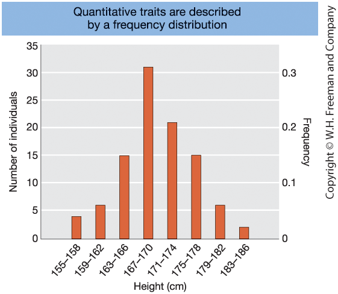
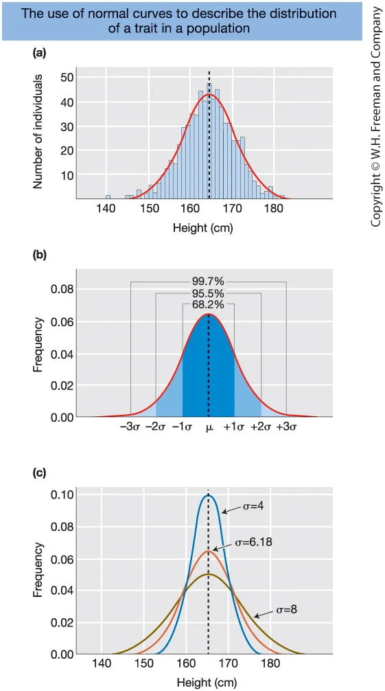
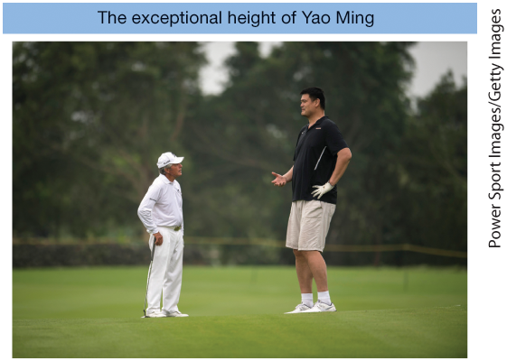
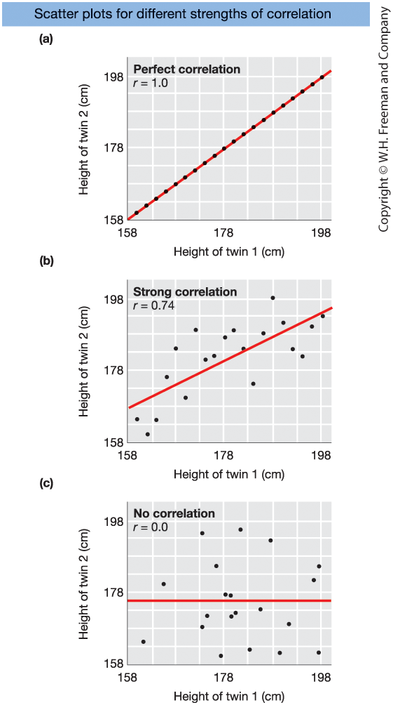
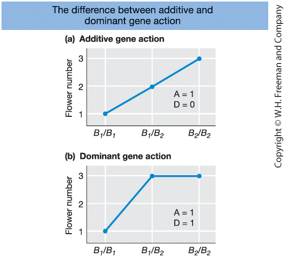
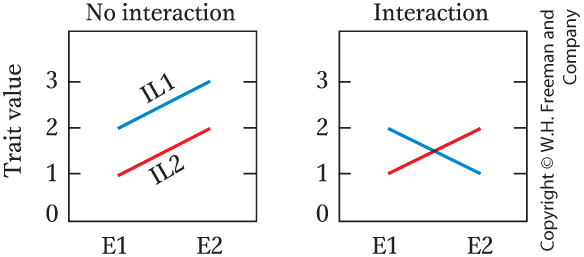
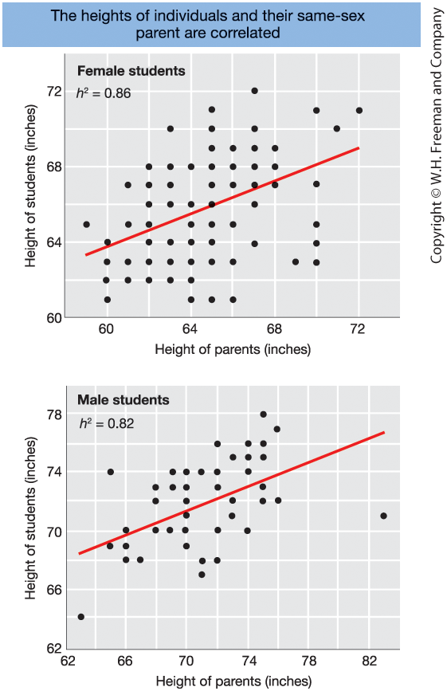
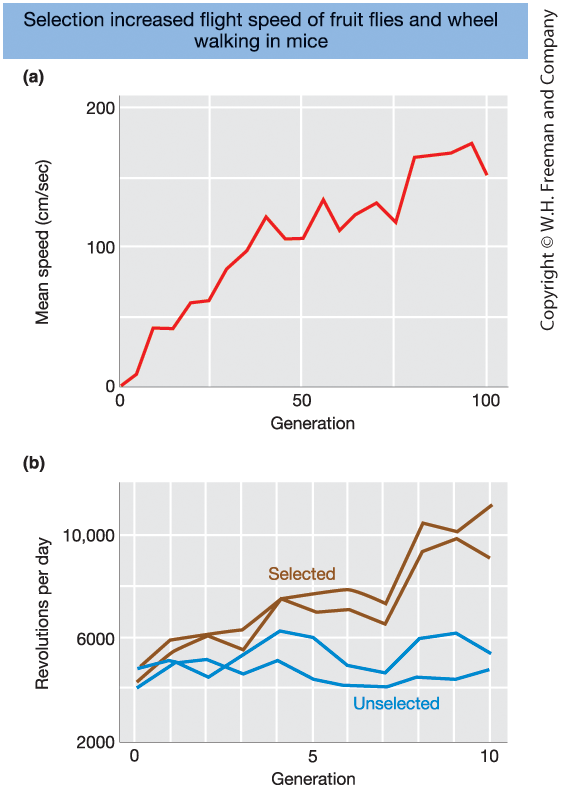
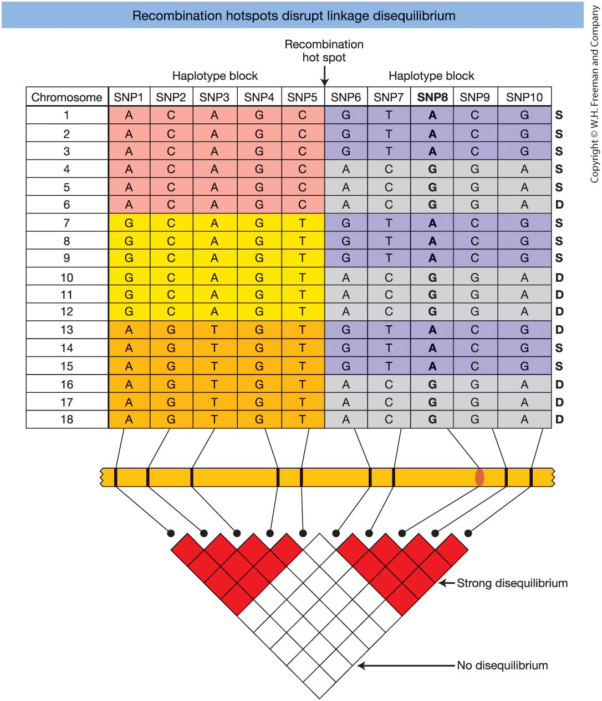
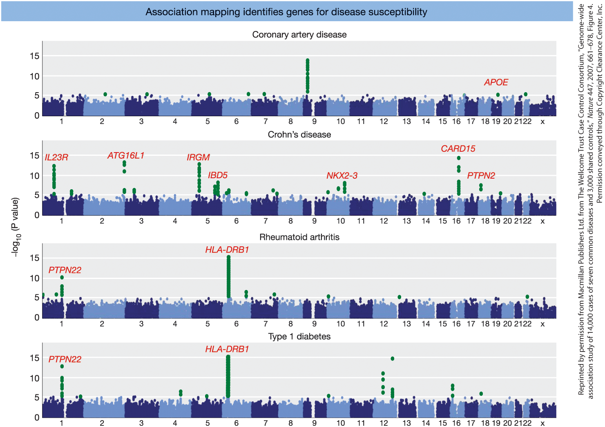

Complex Traits
Chapter 19 - Introduction to Genetic Analysis (12th ed.)
Center for Quantitative Genetics and Genomics
Aarhus University
2026-02-21
Learning Goals
19.1 Measuring Quantitative Variation
- Understand how mathematical models and statistics are used to study complex traits
19.2 A Simple Genetic Model
- Assess the relative contributions of genetic and environmental factors to phenotypic traits
19.3–19.4 Heritability
- Calculate and interpret broad-sense heritability
- Calculate and interpret narrow-sense heritability
- Use parental phenotypes to predict offspring phenotypes
19.5–19.6 Mapping Quantitative Traits
- Determine how many genes contribute to variation in a trait
- Design and analyze QTL and association mapping studies
What Are Complex (Quantitative) Traits?
Quantitative (complex) traits:
- Show a continuous range of variation
- Do not follow simple Mendelian ratios
- Are influenced by:
- Multiple genes
- Environmental factors
Examples:
- Human height
- Blood pressure
- Crop yield
- Milk production
Multifactorial hypothesis
- Many Mendelian loci (each small effect)
- Environmental contributions
What Is Quantitative Genetics?
Quantitative genetics:
- Uses mathematical models
- Applies statistical methods
- Studies inheritance of complex traits
Central goal is to define the genetic architecture of a trait:
- Number of genes involved
- Size of their effects
- Population-specific variation
19.1 Measuring Quantitative Variation
To study complex traits, we need basic statistical tools:
- Mean → describes differences between groups
- Variance → quantifies variation within groups
- Normal distribution → describes how variation is distributed
Quantitative genetics focuses on traits with complex inheritance.
Types of Traits and Inheritance
Continuous traits
- Infinite range of values (e.g., height)
- Typically influenced by many genes + environment
Categorical traits
- Discrete groups (e.g., purple vs. white flowers)
- May show simple or complex inheritance
Threshold traits
- Categorical outcome
- Underlying risk is quantitative (e.g., type 2 diabetes)
Meristic traits
- Countable values (e.g., clutch size)
- Quantitative but not continuous
Key concept:
A complex trait does not follow simple Mendelian inheritance.
The Mean
Definition
To study quantitative traits we sample from a population.
Sample mean:
\[ \bar{X} = \frac{\sum X_i}{n} \]
Population mean:
\[ \mu \]
The mean describes the center of the data.
Example
Suppose we measure height (cm) for a random sample of 5 individuals:
168, 172, 170, 174, 166
\[ \bar{X} = \frac{168+172+170+174+166}{5} \]
We use \(\bar{X}\) to estimate the true population mean \(\mu\).
\[ \bar{X} = \frac{850}{5} = 170 \]
Mean Using Frequencies
Definition (Grouped Data)
If data are grouped into classes:
\[ \bar{X} = \frac{\sum f_i X_i}{n} \]
- \(f_i\) = frequency of class \(i\)
- \(X_i\) = value (or midpoint) of class \(i\)
- \(n = \sum f_i\)
The mean is a weighted average.
Example
Suppose height data are grouped:
| Height (cm) | Frequency (\(f_i\)) |
|---|---|
| 165 | 2 |
| 170 | 3 |
| 175 | 1 |
Total \(n = 6\)
\[ \bar{X} = \frac{(2 \cdot 165) + (3 \cdot 170) + (1 \cdot 175)}{6} \]
\[ \bar{X} = \frac{330 + 510 + 175}{6} = \frac{1015}{6} = 169.2 \text{ cm} \]
The Variance
Definition
Variance describes the spread the data.
Deviation from the mean:
\[ x_i = X_i - \bar{X} \]
Population variance:
\[ \sigma^2 = \frac{\sum (X_i - \mu)^2}{n} \]
Standard deviation:
\[ \sigma = \sqrt{\sigma^2} \]
Example
Using the sample:
168, 172, 170, 174, 166
Mean: \[ \bar{X} = 170 \] Deviations: -2, 2, 0, 4, -4
Squared deviations: 4, 4, 0, 16, 16
Sum of squares: \[ 40 \] Variance (using \(n=5\)): \[ \sigma^2 = \frac{40}{5} = 8 \]
Standard deviation: \[ \sigma = \sqrt{8} \approx 2.83 \text{ cm} \]
The Normal Distribution
Definition
Many biological traits follow a normal distribution.
A normal distribution is fully defined by:
- Mean: \(\mu\)
- Variance: \(\sigma^2\)
(or standard deviation \(\sigma\))
Probability density function:
\[ f(x) = \frac{1}{\sigma \sqrt{2\pi}} \exp\left( -\frac{(x - \mu)^2}{2\sigma^2} \right) \]
Key Properties
Characteristics:
- Bell-shaped curve
- Symmetrical around the mean \(\mu\)
- Spread determined by \(\sigma\)
- Total area under curve = 1
Central role in quantitative genetics:
- Describing quantitative traits
- Modeling phenotypic variance
- Partitioning genetic and environmental effects
Frequency Distribution of Height

Figure 19-1.
Frequency histogram of simulated height data
for 100 adult men from Shanghai, China.
- X-axis = height classes (cm)
- Y-axis = number of individuals / frequency
- Most individuals cluster near the mean (~170 cm)
- Few individuals at the extremes
Normal Distribution

Figure 19-2
- Histogram of U.S. women’s height
- Red line = fitted normal curve
- Mean = 164.4 cm
- SD = 6.18 cm
- Red line = fitted normal curve
- The 68–95–99.7 rule
- 68% within ±1 SD
- 95% within ±2 SD
- 99.7% within ±3 SD
- 68% within ±1 SD
- Same mean, different SD
- Smaller SD → narrower curve
- Larger SD → wider curve
- Smaller SD → narrower curve
19.2 A Simple Genetic Model for Quantitative Traits
Theory
A quantitative trait value can be modeled as:
\[ P = \mu + G + E \]
- \(\mu\) = population mean
- \(G\) = genetic deviation
- \(E\) = environmental deviation
Deviation from the mean:
\[ p = P - \mu = G + E \]
Interpretation
- \(\mu\) sets the baseline of the population
- \(G\) explains differences due to genotype
- \(E\) explains differences due to environment
Two individuals can differ because:
- They carry different alleles
- They experience different environments
- Or both
This model is the foundation for:
- Variance partitioning
- Heritability
- Prediction of response to selection
Example: Decomposing a Phenotype

Step 1: Observed phenotype
- Yao Ming’s height: \(P = 229\) cm
- Population mean: \(\mu \approx 170\) cm
Step 2: How far is he from the average?
\[ p = P - \mu = 229 - 170 = 59\text{ cm} \]
He is 59 cm taller than the population mean.
Step 3: Apply the genetic model
Our model says that \(p = G + E\) and therefore
\[
59 = G + E
\] His exceptional height must be due to a genetic component (\(G\)), an environmental component (\(E\)), or both.
From Phenotype to Variance
Mathematical derivation
Start with the phenotype model:
\[ P = \mu + G + E \]
Deviation from the mean:
\[ p = P - \mu = G + E \]
Variance:
\[ V_P = \text{Var}(p) \]
Substitute:
\[ V_P = \text{Var}(G + E) \]
Statistical rule:
\[ V_P = V_G + V_E + 2\text{Cov}(G,E) \]
Interpretation
If genotype and environment are independent:
\[ \text{Cov}(G,E) = 0 \]
Then:
\[ V_P = V_G + V_E \]
Meaning:
- Total variation = genetic variation
- environmental variation
This partition works only when:
- Genotypes are randomly exposed to environments
- There is no systematic matching of
“good genes” with “good environments”
If such matching occurs:
- \(\text{Cov}(G,E) \neq 0\)
- Variance cannot be cleanly decomposed
Example: Partitioning Variance (Maize Experiment I)
Numerical results
Total phenotypic variance:
\[ V_P = 14.67 \]
Genetic variance
(variation among inbred line means):
\[ V_G = 12.00 \]
Environmental variance
(variation among environment means):
\[ V_E = 2.67 \]
Check:
\[ V_P = V_G + V_E \]
\[ 14.67 = 12.00 + 2.67 \]
Interpretation
Most variation is genetic
(\(12.00\) out of \(14.67\))Environmental variation is smaller
(\(2.67\))The decomposition works because:
\[ \text{Cov}(G,E) = 0 \]
Genotypes were randomized
across environments
This concrete example shows that:
\[ V_P = V_G + V_E \]
holds when genotype and environment are independent.
Correlation Between Variables
Definition
Correlation measures the relationship
between two variables.
Mathematically:
\[ r = \frac{\text{Cov}(X,Y)}{\sigma_X \sigma_Y} \]
Properties:
- \(-1 \le r \le 1\)
- \(r = 1\) → perfect positive correlation
- \(r = 0\) → no correlation
- \(r = -1\) → perfect negative correlation
Interpretation (Twin Example)
Imagine plotting:
- Twin 1 height (x-axis)
- Twin 2 height (y-axis)
• Perfect correlation
→ All points lie on a straight line
• Strong positive correlation
→ Clear upward trend with scatter
• No correlation
→ Random cloud of points
Correlation quantifies
how tightly the points cluster around a line.
Correlation, Covariance, and the Variance Model
Statistical identity
Variance of a sum:
\[ \text{Var}(G + E) = V_G + V_E + 2\text{Cov}(G,E) \]
If:
\[ \text{Cov}(G,E) = 0 \]
Then:
\[ V_P = V_G + V_E \]
Why this matters
Our genetic model assumes:
\[ P = \mu + G + E \]
The clean partition:
Phenotypic variance
= Genetic variance + Environmental variance
works only if:
- Genotype and environment are independent
If:
- Best genotypes → best environments
Then:
- \(\text{Cov}(G,E) \ne 0\)
- Variance cannot be cleanly decomposed
This assumption is crucial for estimating heritability.
Strength of Correlation

Figure 19-4.
Scatter plots illustrating different strengths of correlation:
- Perfect correlation (\(r = 1.0\))
- Perfect correlation (\(r = 1.0\))
- Strong positive correlation (\(r = 0.74\))
- Strong positive correlation (\(r = 0.74\))
- No correlation (\(r = 0.0\))
Red line = best-fit line
Slope of red line = correlation coefficient
Key Concept: Why Correlation Matters
Individual Level
Deviation from the mean:
\[ x = g + e \]
- \(g\) = genetic deviation
- \(e\) = environmental deviation
Population Level
\[ V_P = V_G + V_E \quad (\text{if } g \perp e) \]
Variance can be partitioned
only if genotype and environment are independent.
Why Correlation Is Central
Correlation allows us to measure:
- Resemblance between relatives
- Association between traits
- Dependence between \(g\) and \(e\)
If:
\[ \text{Cov}(g,e) \ne 0 \]
Then:
\[ V_P \ne V_G + V_E \]
Correlation determines whether variance can be cleanly decomposed.
Broad-Sense Heritability (\(H^2\))
Definition
Key question:
- How much of trait variation is genetic?
Broad-sense heritability:
\[ H^2 = \frac{V_G}{V_P} \]
where:
- \(V_G\) = genetic variance
- \(V_P\) = total phenotypic variance
Range:
- \(0 \le H^2 \le 1\)
Interpretation
- \(H^2 = 0\) → all variation environmental
- \(H^2 = 1\) → all variation genetic
Important:
- Describes variation in a population
- Not “% genetic” for an individual
- Population- and environment-specific
“Broad-sense” includes:
- Additive effects
- Dominance effects
- Gene–gene interactions (epistasis)
Heritability Depends on the Environment (Maize Example)
Experiment I: Similar Environments
- \(V_G = 12.0\)
- \(V_E = 2.67\)
- \(V_P = 14.67\)
\[ H^2 = \frac{12.0}{14.67} = 0.82 \]
Interpretation:
- 82% of variation is genetic
- Trait appears highly heritable
Experiment II: More Variable Environments
- \(V_G = 12.0\) (same genotypes)
- \(V_E = 24.0\)
- \(V_P = 36.0\)
\[ H^2 = \frac{12.0}{36.0} = 0.33 \]
Interpretation:
- Only 33% of variation is genetic
- Environmental variance dominates
Estimating Heritability Using Identical Twins
Theory
Identical (monozygotic) twins:
- Share 100% of their genes
- If reared apart → environments treated as independent
Under independence:
\[ \text{Cov}(\text{Twin 1}, \text{Twin 2}) = V_G \]
Therefore:
\[ H^2 = \frac{V_G}{V_P} = \frac{\text{Cov(twins)}}{V_P} \]
Key assumption:
\[ \text{Cov}(G,E) = 0 \]
Example: IQ in Twins Reared Apart
From data:
- Covariance between twins = 119.2
- Total phenotypic variance \(V_P\) = 154.3
Heritability estimate:
\[ H^2 = \frac{119.2}{154.3} = 0.77 \]
Interpretation
77% of IQ variation (in this population)
is associated with genetic differencesThis describes variation in a population
— not individuals.
Broad-Sense Heritability in Humans
| Trait | \(H^2\) |
|---|---|
| Physical traits | |
| Height | 0.88 |
| Fingerprint ridge count | 0.97 |
| Systolic blood pressure | 0.64 |
| Cognitive traits | |
| IQ | 0.69 |
| Spatial processing speed | 0.36 |
| Personality traits | |
| Extraversion | 0.54 |
| Neuroticism | 0.48 |
| Psychiatric disorders | |
| Autism | 0.90 |
| Schizophrenia | 0.80 |
| Major depression | 0.37 |
| Beliefs / attitudes | |
| Religiosity (adults) | 0.30–0.45 |
| Conservatism (adults) | 0.45–0.65 |
This table shows broad-sense heritability (\(H^2\)) estimates from twin studies.
\[ H^2 = \frac{V_G}{V_P} \]
Key patterns:
Physical traits → often high \(H^2\)
(e.g., height, fingerprints)Cognitive & personality traits → moderate \(H^2\)
Psychiatric disorders → variable
(some high, some moderate)Even beliefs and attitudes show measurable heritability
Narrow-Sense Heritability: Predicting Phenotypes
From Broad to Narrow Heritability
Broad-sense heritability:
\[ H^2 = \frac{V_G}{V_P} \]
But genetic variance contains multiple components:
Additive variance (\(V_A\))
→ predictably transmittedDominance variance (\(V_D\))
→ depends on allele combinations
Total genetic variance:
\[ V_G = V_A + V_D \; (+ \text{interaction variance}) \]
Narrow-Sense Heritability
\[ h^2 = \frac{V_A}{V_P} \]
Focuses only on additive variance.
Why?
- Additive effects are predictably inherited
- Determine parent–offspring resemblance
- Determine response to selection
Key idea:
Only additive genetic variation drives evolutionary change.
Additive vs Dominant Gene Action

Figure 19-6. Gene action at locus B
- Additive gene action
- Dominant gene action
- X-axis: Genotype (\(B_1B_1\), \(B_1B_2\), \(B_2B_2\))
- Y-axis: Number of flowers
Key idea:
- Additive → heterozygote is intermediate
- Dominant → heterozygote equals one homozygote
Additivity and Dominance in the Genetic Model
Example: Same phenotype, different inheritance
With dominance:
- \(B_1B_2\) → 3 flowers
- \(B_2B_2\) → 3 flowers
Population mean = 2.5
Genotypic deviation:
\[ g = 3 - 2.5 = 0.5 \]
But offspring means differ:
- \(B_1B_2\) → mean offspring = 2.75
- \(B_2B_2\) → mean offspring = 3.0
Same phenotype
≠ same transmitted effect
Genetic Decomposition
Full phenotypic model in the case of dominance:
\[ p = a + d + e \] Where:
\(a\) = additive deviation
→ breeding value
→ predictably transmitted\(d\) = dominance deviation
→ allele interaction
→ not predictably transmitted\(e\) = environmental deviation
Only \(a\) contributes to predictable parent–offspring resemblance.
Decomposing Genetic Effects
| Genotype | \(B_1B_1\) | \(B_1B_2\) | \(B_2B_2\) |
|---|---|---|---|
| Trait value | 1 | 3 | 3 |
| Genetic deviation (\(g\)) | −1.5 | 0.5 | 0.5 |
| Additive deviation (\(a\)) | −1 | 0 | 1 |
| Dominance deviation (\(d\)) | −0.5 | 0.5 | −0.5 |
Partition of genetic deviation
\[ g = a + d \]
Where:
\(g\) = total genetic deviation
\(a\) = additive deviation
→ breeding value
→ predictably transmitted\(d\) = dominance deviation
→ allele interaction
→ not predictably transmitted
Only additive effects drive
parent–offspring resemblance.
Modes of Gene Action at One Locus
Genotypes at locus \(B\)
\(BB\), \(Bb\), \(bb\)
Additive gene action
- \(BB = 3\)
- \(Bb = 2\)
- \(bb = 1\)
Heterozygote is midway
Dominant gene action
- \(BB = 3\)
- \(Bb = 3\)
- \(bb = 1\)
\(B\) is dominant
Partial dominance
- \(BB = 3\)
- \(Bb = 2.5\)
- \(bb = 1\)
Intermediate, but not exactly midway
Why this matters
Additive gene action:
- Allele effects add linearly
- Produces predictable transmission
- Creates additive variance (\(V_A\))
Dominance:
- Depends on allele combinations
- Does not transmit predictably
- Contributes to \(V_D\), not \(V_A\)
Key insight:
Only additive effects contribute to narrow-sense heritability
Narrow-Sense Heritability (\(h^2\))
Definition
\[ h^2 = \frac{V_A}{V_P} \]
- \(V_A\) = additive variance
- \(V_P\) = total phenotypic variance
Only additive variance is predictably transmitted.
Broad-sense heritability:
\[ H^2 = \frac{V_G}{V_P} \]
But:
\[ V_G = V_A + V_D (+ V_I) \]
Estimation
Parent–offspring covariance:
\[ \text{Cov}_{\text{parent, offspring}} = \frac{1}{2} V_A \]
Therefore:
\[ h^2 = \frac{2\,\text{Cov}_{\text{parent, offspring}}}{V_P} \]
Alternative:
Half-sibs share \(\frac{1}{4}\) genes
\[ V_A = 4\,\text{Cov}_{\text{half-sibs}} \]
Example:
Human height: \(h^2 \approx 0.8\)
Genotype × Environment Interaction

Reaction norms for two inbred lines (IL1, IL2)
Left panel: No interaction
- Parallel lines
- Difference between genotypes is constant
- Genetic effect is stable across environments
Right panel: Genotype × Environment interaction
- Lines cross
- Relative performance changes
- Genetic differences depend on environment
Key idea:
Genotype performance is environment-dependent.
Narrow-Sense Heritability (h²)

Figure 19-8.
Parent–offspring regression for height
- Top: mother–daughter pairs
- Bottom: father–son pairs
Key points:
- Clear positive correlations
- Slope of regression line ≈ h²
- Estimates:
- Daughters: h² ≈ 0.86
- Sons: h² ≈ 0.82
- Daughters: h² ≈ 0.86
Interpretation:
Most variation in height is additive and transmitted from parent to offspring.
Narrow-Sense Heritability (h²) Across Species
| Trait | h² (%) |
|---|---|
| Agronomic species | |
| Body weight (cattle) | 65 |
| Milk yield (cattle) | 35 |
| Back-fat thickness (pig) | 70 |
| Litter size (pig) | 5 |
| Body weight (chicken) | 55 |
| Egg weight (chicken) | 50 |
| Natural species | |
| Bill length (Darwin’s finch) | 65 |
| Flight duration (milkweed bug) | 20 |
| Plant height (jewelweed) | 8 |
| Fecundity (red deer) | 46 |
| Life span (collared flycatcher) | 15 |
These are estimates of narrow-sense heritability (h²) in different species and traits.
\[h^2 = V_A / V_P\]
- Measures additive (transmissible) variation
- Predicts response to selection
Patterns:
- Production traits in livestock often show moderate–high h²
- Reproductive traits tend to have low h²
- Natural populations show wide variation
Low h² does not mean genes are unimportant —
it means additive variance is limited relative to total variance.
Predicting Offspring Phenotypes
What is transmitted?
Individual deviation:
\[ x = a + d + e \]
Parents:
\[ x' = a' + d' + e' \]
\[ x'' = a'' + d'' + e'' \]
Expected offspring deviation:
\[ x_0 = \frac{a' + a''}{2} \]
Only additive effects (\(a\))
are predictably transmitted.
Dominance (\(d\)) and environment (\(e\))
are not inherited.
Prediction Using \(h^2\)
Since \(a\) is not directly observed:
\[ \hat{x}_{\text{offspring}} = h^2 \times \bar{x}_{\text{parents}} \]
Predicted phenotype:
\[ \hat{X}_{\text{offspring}} = \mu + \hat{x}_{\text{offspring}} \]
Example (Sheep fleece)
Population mean = 6.0 lb
Mean parental deviation = 0.75
\(h^2 = 0.4\)
\[ 0.4 \times 0.75 = 0.3 \]
Predicted offspring:
\[ 6.0 + 0.3 = 6.3 \text{ lb} \]
Selection on Complex Traits
Artificial selection
Humans select individuals with desirable phenotypes for reproduction.
Selection differential \[ S = \bar{X}_{selected} - \bar{X}_{population} \]
Response to selection \[ R = \bar{X}_{offspring} - \bar{X}_{population} \]
Breeder’s equation \[ R = h^2 S \qquad h^2 = \frac{R}{S} \]
Only additive genetic variance contributes to response.
Example: Provitamin A in maize
Base population mean = 1.25 µg/g
Selected mean = 1.63 µg/g
Offspring mean = 1.44 µg/g
Selection differential:
\[ S = 1.63 - 1.25 = 0.38 \]
Response:
\[ R = 1.44 - 1.25 = 0.19 \]
Heritability:
\[ h^2 = \frac{0.19}{0.38} = 0.50 \]
About 50% of variation is additive and transmissible.
Selection Shifts the Population Mean

Figure 19-9.
One generation of artificial selection for provitamin A in maize.
Base population mean = 1.25 μg/g
Selected group mean = 1.63 μg/g
Offspring mean = 1.44 μg/g
Selection differential:
\[ S = 1.63 - 1.25 = 0.38 \]Selection response:
\[ R = 1.44 - 1.25 = 0.19 \]
Only the additive (heritable) component causes the shift in the next generation.
Long-Term Response to Artificial Selection

Figure 19-10.
Long-term selection experiments demonstrate sustained evolutionary change.
- Fruit flies
- Selected for increased flight speed
- Mean speed increased dramatically over 100 generations
- Mice
- Selected for voluntary wheel running
- Large increase over just 10 generations
- Control (unselected) lines changed very little
Key message:
Populations contain substantial additive genetic variation
and can respond to selection for many generations.
What Heritability Does NOT Mean
Broad-sense heritability \[ H^2 = \frac{V_G}{V_P} \]
Narrow-sense heritability \[ h^2 = \frac{V_A}{V_P} \]
Heritability is:
- Population-specific
- Environment-specific
- A measure of variation, not destiny
Heritability does NOT mean:
- Not the “% genetic” for an individual
- Not that a trait is genetically determined
- Not that a trait cannot change
- Not universal across populations
- Not independent of environment
19.5 Mapping QTL in Known Pedigrees
Quantitative Trait Loci (QTL):
- Genes contributing to variation in complex traits
- Typically small, additive effects
Key challenge:
- Genotype distributions overlap
- Cannot infer genotype from phenotype alone
Solution:
- Use linked marker loci
- Look for statistical association between marker genotype and trait value
Basic Experimental Design
Example: Tomato fruit weight
Parents: - Beefmaster (230 g)
- Sungold (10 g)
Steps:
- Cross parents → F₁
- Backcross → BC₁ population
- Measure fruit weight
- Genotype markers across genome
BC₁ marker genotypes:
- B/B
- B/S
Detecting a QTL
If marker is NOT linked to QTL:
- Mean(B/B) ≈ Mean(B/S)
If marker IS linked to QTL:
- Mean(B/B) ≠ Mean(B/S)
Example:
- Marker M1 → means similar → no QTL
- Marker M3 → means differ → QTL nearby
Conclusion:
- QTL mapping identifies genomic regions
- Statistical tests determine significance
Association Mapping (GWAS)
Association mapping identifies loci controlling quantitative traits
in random-mating populations.
Core idea
- Uses naturally occurring linkage disequilibrium (LD)
- Tests statistical association between:
- Genetic markers (e.g., SNPs)
- Phenotypic variation
Genome-Wide Association Study (GWAS)
- Scans the entire genome
- Tests thousands to millions of SNPs
- No need to specify candidate genes in advance
Example: ApoE gene (1990s study)
- e4 allele associated with cardiovascular disease
- Carriers had ~42% higher risk
Advantages over classical QTL mapping
- No controlled crosses required
- No pedigree information needed
- Tests many alleles simultaneously
- Can directly pinpoint causal genes
Key idea
If a SNP is in LD with a QTL,
that SNP will show a statistical association with the trait.
Association Mapping (GWAS)
Association mapping identifies loci controlling quantitative traits in random-mating populations.
Core idea
- Uses naturally occurring linkage disequilibrium (LD)
- Tests statistical association between:
- Genetic markers (e.g., SNPs)
- Phenotypic variation
Genome-Wide Association Study (GWAS)
- Scans the entire genome
- Tests thousands to millions of SNPs
- No need to specify candidate genes in advance
Example: ApoE gene (1990s study)
- e4 allele associated with cardiovascular disease
- Carriers had ~42% higher risk
Advantages over classical QTL mapping
- No controlled crosses required
- No pedigree information needed
- Tests many alleles simultaneously
- Can directly pinpoint causal genes
Key idea
If a SNP is in LD with a QTL,
that SNP will show a statistical association with the trait.
The Basic Method of GWAS
GWAS relies on linkage disequilibrium (LD) across the genome.
Key genomic features
- Nearby SNPs → strong LD
- Distant SNPs → weak/no LD
- Recombination hotspots disrupt LD
- SNPs form haplotype blocks
Within a haplotype block
- SNPs are highly correlated
- One SNP can serve as a proxy
- Functional SNP need not be directly genotyped
Basic GWAS workflow
- Sample large population
- e.g., 50,000 cases + 50,000 controls
- e.g., 50,000 cases + 50,000 controls
- Genotype hundreds of thousands of SNPs
- Test each SNP for association
- Plot P-values across the genome
Interpretation
- Each SNP tested independently
- Significant SNPs indicate genomic region of interest
- Association ≠ causation
- Functional validation required
Key principle
LD allows detection of causal loci even without directly genotyping the functional mutation.
Linkage Disequilibrium and Recombination Hotspots

Figure 19-17.
Top:
- SNP patterns across 18 chromosomes
- Two haplotype blocks: SNP1–5 and SNP6–10
- Recombination hotspot between SNP5 and SNP6
- SNP8 (bold) is a functional SNP affecting phenotype
Bottom (LD heatmap):
- Red = strong linkage disequilibrium (LD)
- White = weak or no LD
- Strong LD within haplotype blocks
- Weak LD across hotspot
Key idea:
Recombination hotspots break up LD
and define haplotype blocks.
GWAS Identifies a Gene for Body Size in Dogs

Figure 19-18.
- Genome-wide association study (GWAS) for body size in dogs
- Each dot = one SNP
- Y-axis = −log10(P value)
- Horizontal line = significance threshold
- Strong peak on chromosome 15
→ Region contains the IGF1 gene
- Small vs. large dog breeds
IGF1 is a major contributor to size differences.
GWAS Identifies Genes for Common Human Diseases

Figure 19-19.
Genome-wide association studies (GWAS)
for several common human diseases.
- X-axis: Chromosomes 1–22
- Y-axis: −log10(P value)
- Green dots = significant SNP associations
- Red labels = candidate genes identified
Examples:
- Coronary artery disease → APOE
- Crohn’s disease → IL23R, ATG16L1, IRGM
- Rheumatoid arthritis → PTPN22, HLA-DRB1
- Type 1 diabetes → PTPN22, HLA-DRB1
Chapter 19 Review – Quantitative Genetics
Quantitative genetics studies complex traits:
- Influenced by multiple genes
- Influenced by environment
- Do not follow simple Mendelian ratios
Types of complex traits
- Continuous (e.g., height)
- Categorical / threshold (e.g., disease status)
- Meristic (counting traits)
Central concept: Genetic architecture
- Number of genes involved
- Effect sizes of loci
- Environmental contribution
- Gene–gene interactions
- Gene–environment interactions
Quantitative genetics seeks to explain
how these components generate phenotypic variation.
Variance and Heritability
Phenotype model \[ p = \mu + g + e \]
Phenotypic variance \[ V_P = V_G + V_E \]
Broad-sense heritability \[ H^2 = \frac{V_G}{V_P} \]
Narrow-sense heritability \[ h^2 = \frac{V_A}{V_P} \]
Interpretation
Phenotype = population mean
+ genetic deviation
+ environmental deviation
Total variation can be partitioned into: - Genetic variance
- Environmental variance
Broad-sense heritability (H²)
Proportion of total variation due to genetics. Includes: - Additive effects
- Dominance effects
- Interaction (epistatic) effects
Narrow-sense heritability (h²)
Proportion due to additive (transmissible) variation.
Only additive variance predicts
response to selection.
Additive Effects and Prediction
Genetic deviation \[ g = a + d \]
- (a) = additive deviation (breeding value)
- (d) = dominance deviation
Only additive effects are predictably transmitted.
Prediction of response to selection \[ R = h^2 S \]
- (S) = selection differential
- (R) = selection response
Traits respond to selection when additive variation exists.
Interpretation
Genetic effects can be decomposed into:
- Additive effects → transmitted from parent to offspring
- Dominance effects → not predictably transmitted
Additive variance drives: - Evolutionary change
- Artificial selection
Breeder’s equation:
Response depends on: - Strength of selection ((S))
- Amount of additive variance ((h^2))
High (h^2) → rapid response
Low (h^2) → limited response
Mapping Genes for Complex Traits
Quantitative trait loci (QTL):
- Genomic regions affecting trait variation
Two major approaches:
QTL mapping
- Controlled crosses
- Known pedigrees
Association mapping / GWAS
- Random-mating populations
- Uses linkage disequilibrium
- Genome-wide SNP scans
GWAS can directly identify candidate genes.
From QTL Mapping to Modern Genomics
Classical QTL Mapping
- Controlled crosses (e.g., backcross, F₂) - Known pedigrees
- Detect regions linked to trait variation
- Limited allelic diversity (2 parental alleles)
↓
Genome-Wide Association Studies (GWAS)
- Random-mating populations
- Millions of SNPs across genome
- Exploit linkage disequilibrium
- Can identify candidate genes directly
↓
Genomic Prediction / Genomic Selection
- Uses all markers simultaneously
- No need to identify individual QTL
- Predict breeding values directly
- Widely used in livestock, crops, and human risk prediction
Core principle (unchanged):
Genotype–phenotype correlations reveal the genetic basis of complex traits.
From Classical Quantitative Genetics to Modern Genomics
Foundations:
- Variance partitioning
\[ V_P = V_G + V_E \] \[ H^2 = \frac{V_G}{V_P}, \quad h^2 = \frac{V_A}{V_P} \]
Prediction:
- Response to selection
\[ R = h^2 S \]
Gene discovery:
- QTL mapping → controlled crosses, known pedigrees
- GWAS → random-mating populations, linkage disequilibrium
Modern extension:
- Genomic prediction → uses all SNPs simultaneously
- Estimates genomic breeding values
- Predicts phenotypes from genome-wide markers
- Estimates genomic breeding values
Key idea:
Quantitative genetics connects statistical models
to molecular identification of genes underlying complex traits.